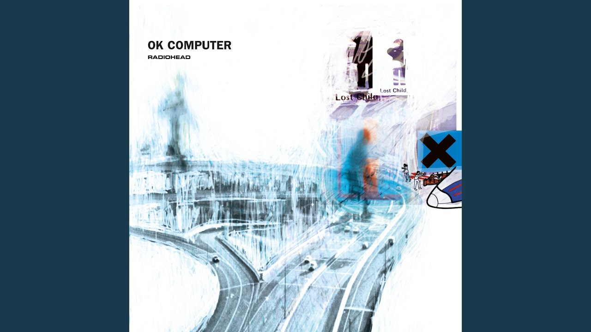

🎵 My Favorite Beats
Alternative Rock

Exit Music (For a Film)
Artist: Radiohead
A haunting acoustic ballad that slowly builds into a powerful, distorted crescendo, capturing a mood of desperate escape.
OPM

Bawat Piyesa
Artist: Munimuni
this song is about exploring its themes of love and the fear of losing someone.
Ballad

Forever
Artist: Lewis Capaldi
The evocative ballad wields simplicity like a double-edged sword, cutting deep into the fabric of cherished memories and the stark reality of love’s finite nature.